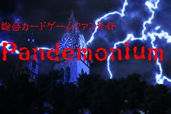
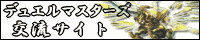
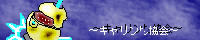

このサイトヘのリンクについて
デュエルマスターズ対戦ＣＧＩへのリンクは、基本的に自由です。
どのような形でリンクを行って頂いても構いませんが、その際には管理人がメシスであることを明記してください。
このページのバナーは、一応下記のものですが、別に使っても使わなくても構いません。
デュエルマスターズ対戦ＣＧＩ ｅｘ
スペシャルサンクス
メシス＠ファクトリー - 掲示板とチャットは、ここで配布されているものです。
デュエルマスターズ関連の外部サイト
デュエルマスターズの翼

Ｐａｎｄｅｍｏｎｉｕｍ
イクスの鳥かご
デュエルマスターズ～光の都～
デュエル・バードラス
ココロノシズク
魂×魂

kagutsuchi-no-mai
デュエマ・ハガレンの間
はしりがき。
決闘を極めし者達†黄金の翼

デュエルマスターズ交流サイト
デュエル・バンパイア
Always Everyday
決闘を極めし者達†黄金の翼
真の間
闇の奏鳴曲
風の豊かな草原
DMのHPだがネギまを好きな管理人好きなのでた…
～永遠の光～
Duel Breeze － ＤＭと遊戯の非公・・・
DMの事いろいろ書いてくサイト
ファービーのデュエルｌｉｆｅ
ボルメテウスの村
DM.サーファー
foanホーム
Corile☆

キャリン㌧協会サブエリア
雑談（・∀・）掲示板
zzz55555のブログ
スケダーの神殿
デュエルマスターズ～りゅうおうの城～
戻る